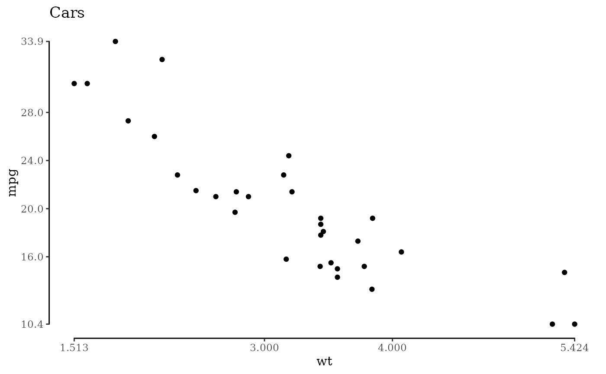
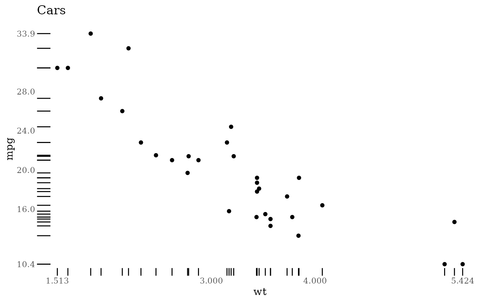

Theme based on Chapter 6 'Data-Ink Maximization and Graphical
Design' of Edward Tufte *The Visual Display of Quantitative
Information*. No border, no axis lines, no grids. This theme works
best in combination with geom_rug() or
geom_rangeframe().
Note
The default font family is set to 'serif' as he uses serif fonts for labels in 'The Visual Display of Quantitative Information'. The serif font used by Tufte in his books is a variant of Bembo, while the sans serif font is Gill Sans. If these fonts are installed on your system, then you can use them with the package extrafont.
Examples
library("ggplot2")
p <- ggplot(mtcars, aes(x = wt, y = mpg)) +
geom_point() +
scale_x_continuous(breaks = extended_range_breaks()(mtcars$wt)) +
scale_y_continuous(breaks = extended_range_breaks()(mtcars$mpg)) +
ggtitle("Cars")
p + geom_rangeframe() + coord_cartesian(clip = "off") + theme_tufte()

p + geom_rug() + theme_tufte(ticks = FALSE)
